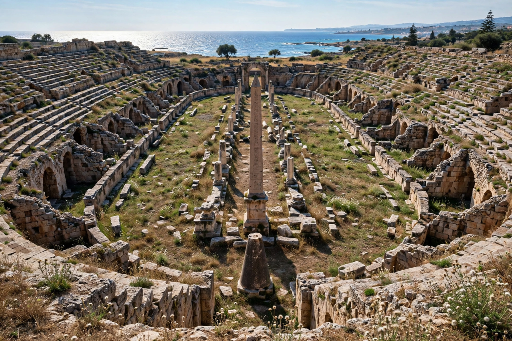

Tyre, Lebanon

City in South Governorate, Lebanon
Founded: c. 2750 BCE (per Herodotus)
UNESCO World Heritage Site (1984)
Tyre is a city in southern Lebanon, about 80 km south of Beirut. Once a great island city-state of Phoenicia, it was among the most important maritime and commercial powers of the ancient Mediterranean, famous for its purple dye, its seafaring merchants and its colonies across the sea, including Carthage.
History
Tyre originally consisted of a mainland settlement and a fortified island city just offshore. Under King Hiram I (c. 969–936 BCE), an ally and trading partner of Solomon, Tyre reached early prominence, supplying cedar, craftsmen and gold for the Temple in Jerusalem. Tyrian sailors explored the Mediterranean and founded colonies in Cyprus, Sicily, Sardinia, Iberia and North Africa; Carthage, traditionally founded by the Tyrian princess Dido (Elissa) in 814 BCE, became the greatest of them.
The mainland city submitted to Assyria, but island Tyre famously withstood a 13-year siege by Nebuchadnezzar II. In 332 BCE Alexander the Great, refused entry, built a causeway of rubble from the mainland and stormed the island after a seven-month siege; the causeway silted up, permanently joining Tyre to the coast as a peninsula. Tyre prospered under Hellenistic, Roman and Byzantine rule — its Roman hippodrome and triumphal arch survive — and remained significant in the Crusader period before Mamluk destruction in 1291. In the modern era it grew again as a fishing port and regional town, and suffered heavily in Lebanon's civil war and later conflicts.
Tyrian purple
The city's name in commerce was its dye: Tyrian purple, extracted laboriously from murex sea snails, coloured the robes of emperors and gave the Phoenicians ("purple people," from Greek phoinix) their name.
Archaeology
Extensive Phoenician, Roman and Byzantine remains, including colonnaded streets, baths, a necropolis and one of the largest Roman hippodromes, led to UNESCO listing in 1984.